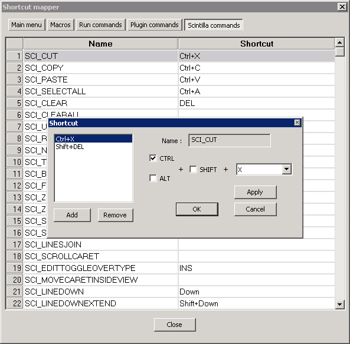

The Shortcut Mapper controls the keyboard shortcuts assigned to commands from the menus and the Scintilla control. Pressing such a shortcut will trigger the command. Menu shortcuts have a one-to-one mapping, meaning that a menu item can have only one shortcut, and no duplicate shortcuts are allowed (you can enter them, but only one will work, so be careful with conflicts). Scintilla shortcuts have a one-to-many mapping, meaning a single Scintilla command can be triggered by multiple shortcut combinations. However, the same shortcut for multiple commands is not allowed, just as with the menu.
Shortcuts are listed in a two column list. The left column shows the name of the command, the right column the associated shortcut, if any. When viewing shortcuts, doubleclicking on it or rightclicking and selecting allows you to change it. You will get an dialog with the name (modifiable for macros and run commands) and the assigned shortcut. Use the checkboxes to control what modifier keys to use (note that Scintilla does not support the Windows key, as it hardly makes sense on a Unix/Mac machine) and the dropdownlist to choose the key to press. Selecting 'none' from the list will disable the shortcut key (a warning will appear). Pressing applies any changes, or closing the dialog aborts.

The dialog for Scintilla shortcuts is a bit different because you can add multiple shortcuts. In addition to the normal controls, you will find a listbox with all the assigned shortcuts (if any). The button will add the current entered shortcut if not 'None' and not already in the list. The button will remove the selected shortcut from the list (you can remove all but the last).
The button will change the currently selected shortcut to the current settings. To remove a shortcut if more than one is present, use the Remove button. To remove a shortcut if it is the only one, set it to 'None' and Apply
The button will save any added or changed shortcuts, but you have to specifically perform the change before it is saved. >p>In all cases, if a shortcut is determined to be invalid, you cannot press OK or Apply to add or modify the shortcut.
The shortcuts are divided in multiple categories: